Part of the Classical Mechanics (V. Balakrishnan) notes, covering Lec 13-16. Video lectures: Classical Mechanics by Prof. Balakrishnan (YouTube playlist).
Understanding the relation of symmetry \(\iff\) invariance \(\Rightarrow\) conservation laws. The first step in this regard was taken by Emmy Noether.
(conserved quantities: \(P_i,\ L,\ E(H)\))
Let us take a case of a particle moving in 2-D:
If the potential has spherical symmetry (in 2-D its rotational) then we know that \(H\) is a constant of motion (C.O.M.).
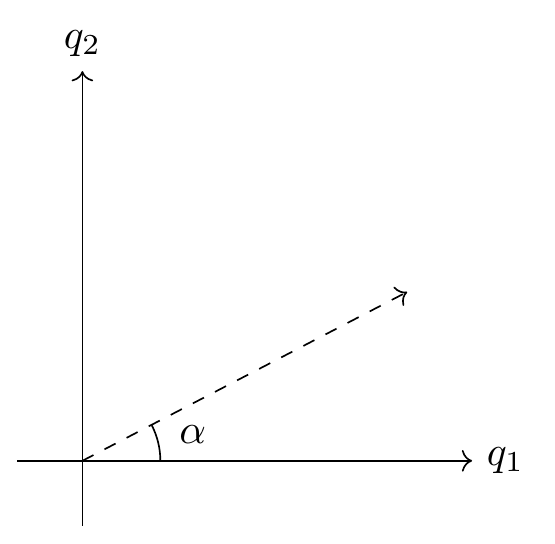
In the rotated frame of reference, what remains constant:
- \(H\)
- Equations of motion (EOM) don't change
- Solution space/set do not change
Q) Does the solution remain the same (constant)?
Let's take the simplest case:
After a rotation transformation \(x'=-x\):
Since \(\underline{x'=-x}\), we deduce that the \(+2\) root changed to \(-2\) and \(-2\to+2\), but the set of solutions remains constant/same, even though the elements of the set of solutions can convert into one another.
So the definition of dynamical symmetry becomes:
Dynamical Symmetry:
The dynamical symmetry of a given system is a set of transformations of phase space variables, such that the EOM don't change, and as a consequence, the set of solutions do not change.
(Autonomous dynamical system) \(\to L'\), with \(L'=L\) if \(\kappa=0\) (by definition), and \(Q(0)=q\).
EOM do not change if \(L'=L\), or, Invariance \(\Rightarrow L'=L\).
\(\kappa,t\) are independent, so
In our frame,
Remember, that the Lagrangian (\(L\)) is not unique: we can add the total time derivative of some function of \(q,t\); therefore it is not necessary that
We can have \(L'\neq L\) and still EOM don't change.
Note: The crucial point of Noether's theorem is that the set of transformations should be continuous -- that's why we differentiate w.r.t. \(\kappa\) -- and it must be connected with the identity (original coordinates \((q,\dot q)\)). In other words, if we have the original coordinates, then we make a transformation continuously starting from no-transformation at all. Parity is not a continuous transformation.
Continuous Transformations:
- Rotation
- Shift in origin
- Shift in origin in time
- Shear, scale
- Gauge transformations (vary \(\kappa\) continuously) \(\to\) (gauge invariance \(\Rightarrow\) leads to conservation of charge).
Symmetry: If the Lagrangian is invariant under a continuous set of transformations, then Noether's theorem tells us there exists a conserved quantity for each transformation parameter.
In shift of origin we have \((x,y,z)\to(x+\alpha,y+\beta,z+\gamma)\); we have 3 parameters of transformation, i.e. \(\alpha,\beta,\gamma\). So, according to Noether's theorem, we will have 3 conserved quantities.
Q. What set of transformations leaves Hamilton's EOM unchanged?
Ans. Canonical transformations.
also
To see the set of solutions remain unchanged, we need only those canonical transformations for which \(K=H\); else it won't be a symmetry (How?).
Suppose \(X=(q,p) \xrightarrow{\text{C.T.}} \xi=(Q,P)\), where \(X,\xi\) are sets of variables.
All three relations must be valid to qualify a transformation as canonical.
_(Margin note: the transformation matrix \(M=\partial\xi/\partial x\) is \(2n\times 2n\), i.e. \(q=2n,\ p=2n\).)_
For any \(\{A,B\}\) can be written as \(\{A,B\} = (\nabla A)^T J (\nabla B)\).
If a matrix \(M\) follows
then \(M\) is called a symplectic matrix.
Recall, \(J^2=-I\), \(J^T=J^{-1}=-J\).
So symplectic matrices have inverses, so canonical transformations' matrix is invertible: \(M=\left(\dfrac{\partial\xi}{\partial x}\right)\) is non-singular, \(|M|\neq 0\).
We know canonical transformations must be invertible transformations. Also, the product of two symplectic matrices is also a symplectic matrix (as symplectic matrices form a group).
Physically it implies that two canonical transformations applied serially are equivalent to a single canonical transformation.
Note: The inverse-composition law suggests the set of canonical transformations for an \(n\)-dof Hamiltonian system forms a group. It is the group of \(2n\times 2n\) symplectic matrices, called
Note: \(J\) is also a symplectic matrix.
Q) What is the C.T. corresponding to symplectic matrix \(J\)?
Note: We know that the group of rotations in 3 dimensions has three parameters (for rotation),
(Digression:) Q. How many parameters for \(n\)-D?
Ans. (a) Rotation in 2-D about the point (origin).
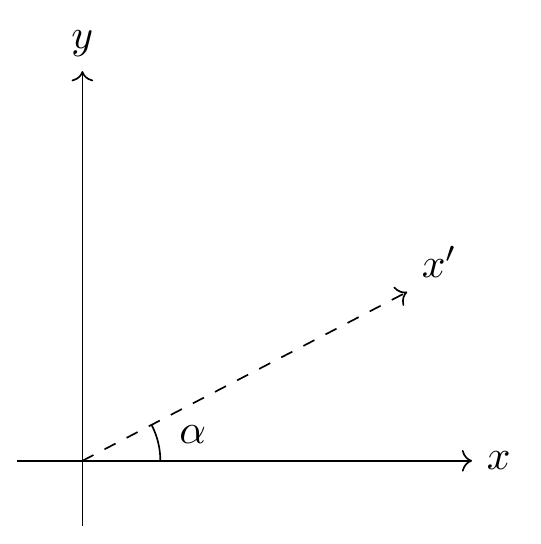
\[ SO(2): \begin{pmatrix}\cos\alpha & \sin\alpha \\ -\sin\alpha & \cos\alpha\end{pmatrix} \quad \text{orthogonal} \]
Set of transformation is homogeneous (origin unchanged). 2-D rotation (linear, homogeneous) is \(SO(2)\), \(|SO(2)|=+1\), length unchanged.
Defining rotation (for \(n\)-dimensions):
- Linear
- Homogeneous
- Distances unchanged \(\Rightarrow\) matrix should be orthogonal
- \(|SO(n)|=1\) (unimodular)
Note: In 3-D, if we rotate by a single axis, it is not termed as "rotation," as from the definition we have not defined rotation as rotation about a single axis. For rotation \(T\) should be linear, homogeneous, orthogonal, and unimodular.
Note: If the transformation is homogeneous (origin fixed) and to achieve distances unchanged, the transformation matrix should be orthogonal; and if we want orientation to be unchanged we need it to be unimodular, \(|M|=1\). So, as we know \(\det(\text{orthogonal } M)=\pm1\), we choose \(+1\) for rotation. For reflection \(|M|=-1\).
In 3-D we can do rotation on a plane, where two variables are affected at a time. For two variables affected at a time, the number of rotations is \(^nC_2\) for \(n\)-dimensions.
for \(n=3\): no. of rotations \(=\dfrac{3\cdot2}{2}=3\).
So we think (mistakenly) that rotation is occurring about an axis, but really we mean rotation in the \(xy\) plane, \(yz\) plane, \(xz\) plane.
Hence, only for 3-D is \(\dfrac{n(n-1)}{2}=n\).
So \(SO(n)\) has \(^nC_2\) generators.
In exactly the same way, we can ask how many generators does the symplectic group \(Sp(2n,\mathbb{R})\) have? (Or) How many possible parameters do we need to specify all possible canonical transformations. Let us make an infinitesimal transformation.
So the generator of a symplectic transformation must satisfy the above equation. Symplectic matrices are generated by those matrices which satisfy \(G^T=JGJ\).
What are generators? The way we look at it can be interpreted by looking at an infinitesimal transformation.
with \(\delta\alpha\) the parameter.
For \(SO(3)\) we will have 3 such generators, and for \(Sp(2n)\) we will have \(2(2n+1)\) generators.
Note: We actually like to write generators as Hermitian matrices, because we need most of the time to exponentiate a Hermitian matrix, as \(e^{iH}=\) unitary matrix.
periodic but complicated (\(\omega\)=rational).
If (\(\omega=1\)):
isotropic (same spring constant \(k\) in all directions).
\(H\) is invariant under \(SO(4)\) \(\hookrightarrow\) set of rotations in \(q\)-\(p\) phase space.
Note: We could have dynamical symmetry arising as a consequence of transformations not just of potentials (not just of physical coordinates), but it could also involve the momenta (phase-space).
From (1) and (2) we deduce that all transformations which leave the Hamiltonian unchanged need not be canonical transformations; similarly, all C.T. need not leave \(H\) unchanged.
For symmetry we need the transformation to be canonical and to leave \(H\) unchanged (\(K=H\)).
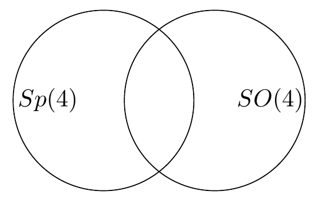
\[ \to \text{Dynamical symmetry group is } Sp(4)\cap SO(4) \sim SU(2) \hookrightarrow \text{isomorphic} \]
\(SU(2)\): set of \(2\times2\) matrices which are unitary and unimodular (\(|M|=1\)).
\(U\) is unitary \(\Rightarrow \boxed{U^\dagger U = I}\)
Q. Is it true \(U^\dagger U = I = UU^\dagger\)?
Ans. Only true for finite-dimensional matrices (as the left inverse becomes equal to the right inverse). But not for infinitesimal matrices: \(U^\dagger U = I \not\Rightarrow UU^\dagger\). But we are concerned with finite-dimensional matrices, so it does not matter.
Verify that the following \(J_1,J_2,J_3\) are constants of motion:
Verify: \(\{J_i,H\}=0\), \(\{J_i,J_j\}=\epsilon_{ijk}J_k\).
Recall the 2-D isotropic oscillator:
It's 2-dof and we have 2 constants of motion which are in involution with each other (\(\{F_1,F_2\}=0\)). (Integrable.)
Note: The dynamical symmetry will be that set of transformations of the 4 phase space variables which leaves \(H\), EOM unchanged, and hence preserves the solution set.
\(SU(2)\) consists of all \(2\times2\) matrices \(M=\begin{pmatrix}a&b\\c&d\end{pmatrix}\), such that (implies)
There are \(4\times2=8\) parameters as each entry can be a complex number:
Using \(M^\dagger M = I\) or \(M^{-1}=M^\dagger\), we will have 4 conditions (one for each element). Therefore the number of parameters is reduced to 4. After imposing \(|M|=+1\), one more parameter is lost. So a total of three parameters are left.
(Digression:)
Equating (1) and (2), and \(|M|=\alpha\delta-\beta\gamma=1\):
From \(\alpha^*=\delta\) and \(\delta^*=\alpha\): \((\alpha_1+i\alpha_2)^*=(\delta_1+i\delta_2) \Rightarrow \alpha_1=\delta_1\), and similarly \((\delta_1+i\delta_2)^*=\alpha_1+i\alpha_2 \Rightarrow \textbf{[?]}\) (showing that (3) and (6) are not independent conditions).
So \(M\) becomes
Hence, any \(2\times2\) unimodular, unitary matrix can be written as
The generators of \(SU(2)\) are constants of motion which are not in involution with each other, and it turns out these are \(J_1,J_2,J_3\):
(So 3 parameters require 3 generators.)
Q) How many independent parameters in an \((n\times n)\) unitary matrix?
Ans. \(2n^2-n^2 = n^2\).
So for \(SU(n)\) we have \((n^2-1)\) independent parameters, where 1 parameter got reduced from the \(|M|=\pm1\) condition.
Therefore, e.g. \(SU(3)\) has \(3^2-1=8\) generators.
For the 3-D isotropic oscillator:
(Margin note: dimension of phase space.)
Note:
(periodic orbits).
\(V(r)=r^2\): 3-D oscillator, with \(SU(3)\).
Q) What is the symmetry group of Kepler's Hamiltonian?
C.O.M.: \(H,\ \vec L^2,\ \vec L\cdot\hat n \to\) 3 independent constants of motion which are in involution with each other.
\(\vec L\) is a C.O.M. but \(\{L_i,L_j\}=\epsilon_{ijk}L_k\) (not in involution with each other).
Note: Any central potential problem will have these C.O.M., but there is something special with the Kepler problem, as there exists a further C.O.M., \(\vec A\):
(Laplace--Runge--Lenz vector.)
Verifying \(\vec A\) is a C.O.M.:
for \(V=-k/r\):
\(F=-\nabla V = -\nabla(-k/r) = \nabla(k/r) = -k/r^2\,\hat e_r\)
\(\dfrac{d\vec p}{dt}=F=-\dfrac{k}{r^3}\vec r\)
(since \(\vec L\) is a C.O.M., \(d\vec L/dt=0\).)
LHS is linear; \(\alpha,\beta\) are scalars formed out of \(a,b,c\). As LHS is linear, RHS must be linear:
(\(\lambda\) and \(\mu\) should be universal; they can't depend on \(\vec a,\vec b,\vec c\).)
Interchanging \(b,c\): \(\vec a\times(\vec c\times\vec b) = -\vec a\times(\vec b\times\vec c)\). The only way this can happen is \(\mu=-\lambda\):
It turns out \(\lambda=1\), using the special case \(\hat\imath\times(\hat\jmath\times\hat\jmath)=\cdots\ \hat\imath\times\hat k=-\hat\jmath\):
\(\vec A\) is a C.O.M., therefore it remains unchanged in direction and magnitude.
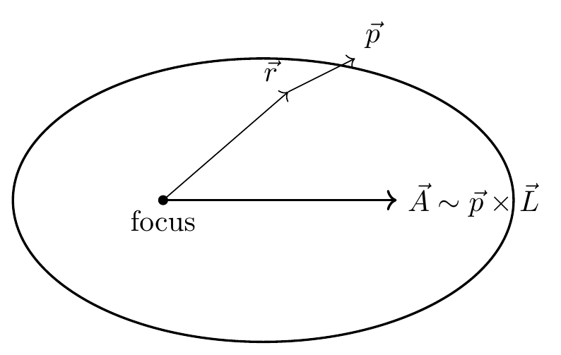
(direction of \(\vec A\) lies along the semi-major axis.)
The \(d\vec A/dt=0\) implies the orbit does not precess.
- Binary stars precess \(\approx 4^\circ\) per orbit
- Precession of Mercury \(\approx 500''\) per century
So in total we got \(H,\vec L,\vec A\), a total of \((1+3+3)=7\) constants of motion, but phase space is only 6-dimensional. It turns out that they are not independent of each other (\(A^2\) is expressed in terms of \(H\) and \(L^2\); \(\vec A\cdot\vec L=0\)).
Note: \(d\vec A/dt=0\) independent of the sign of \(k\), so \(\vec A\) exists for repulsive forces also.
- The dynamical symmetry group is \(SU(4)\) instead of \(SU(3)\). This extra symmetry is seen in terms of degeneracy in quantum mechanics. This extra symmetry is because of \(\vec A\).
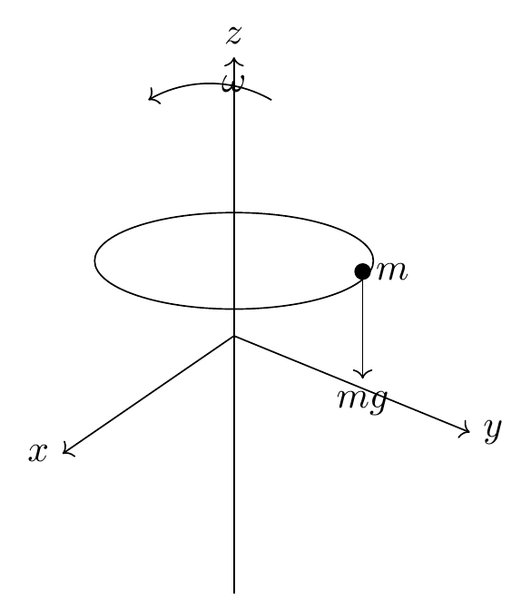
Bead on a rotating hoop of wire.
Constraint: \(y^2+(z-R)^2=R^2\).
The moment we provided \(\omega\) to the hoop, we need cylindrical symmetry \((s,\phi,z)\):
So \(L\) becomes:
Constraint becomes:
also, \(\dot\phi=\omega\) ---(3)
Eq. (2) implies \(z=R\pm\sqrt{R^2-s^2}\); we should choose \(z=R-\sqrt{R^2-s^2}\), as for \(s=0,\ z\to0\).
Using eqs. (3),(4) in (1), \(L\) becomes:
Since \(L\) only depends on one dynamical variable of space (\(s\)), it has only one degree of freedom (\(s\)).
How do we find the equation of the phase-trajectory using Hamilton's equations of motion? \(H(q,p)\)
Ans: we have to solve these equations; if these equations are integrable.
For 1-d.o.f, C.O.M \(= H\) (C.O.M = constants of motion), so the trajectory is just given by \(H=\text{const.}\)
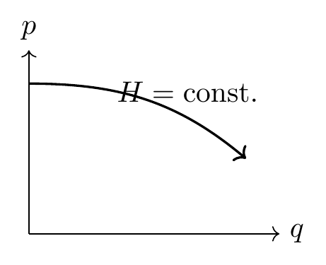
For \(n\)-d.o.f, we need \(n\) constants of motion (C.O.M) and find the canonical transformation (C.T.) which takes us to \((I,\theta)\) variables, and this task is not easy to do.
**
*(If a system is integrable, we can predict what will happen at any time \(t\) in the future, provided the initial phase-space point.)*
(increasing complexity, top to bottom)
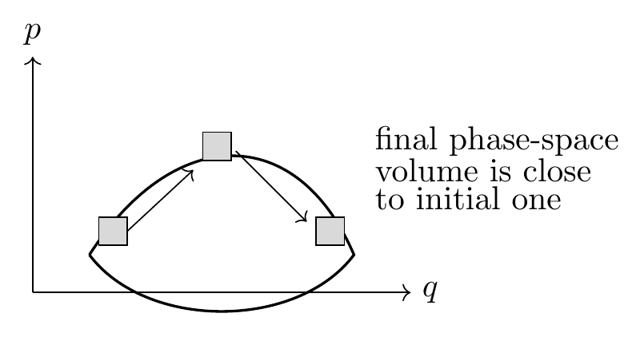
If the initial volume element in phase space visits the neighbourhood of every point of (part of) phase-space, in a given sufficient time, then we say the motion is ergodic.
Note:- Worse can happen to the initial volume element, even when the volume itself is preserved.
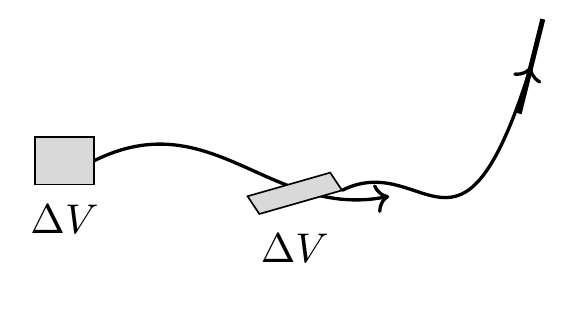
As time goes on, such pieces of the volume element can go as far as the size of the system (arbitrarily far); such kind of motion is ergodic too, but there is a special name for this motion, called mixing.
Suppose the volume of the full phase space is \(\Omega\).
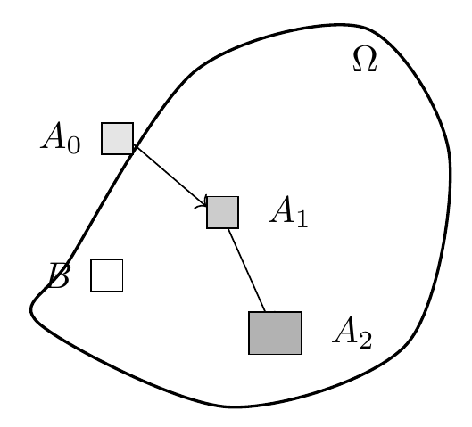
\(A_0\) -- initial phase-space volume; \(\mu \to\) measure.
If \(A_0\) is completely mixed up, how much of \(A_0\) is present in \(B\)?
if,
then the dynamics is said to be strongly mixing.
Note:- Mixing implies ergodicity, whereas ergodicity does not imply mixing, as we can have ergodic motion without mixing (distortion of the phase-space element).
Typically, mixing occurs exponentially fast.
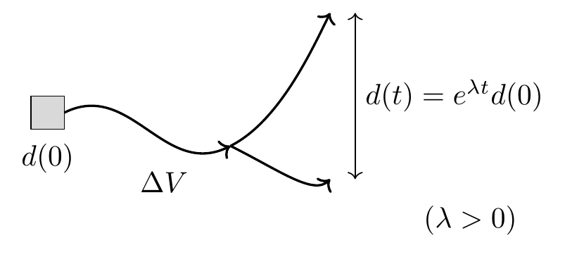
System is said to be in exponential sensitivity to initial conditions.
Example (1-D phase space) \(\to\) hypothetical:
the initial separation is exponentially increasing.
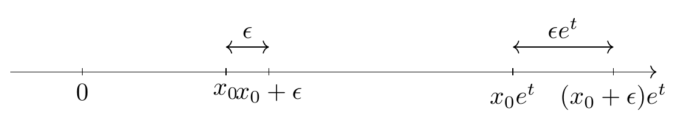
the initial sep is exponentially increasing.
This is just an analogy to understand, but keep in mind \(\dot{x}=x\) is integrable and this is not chaos.
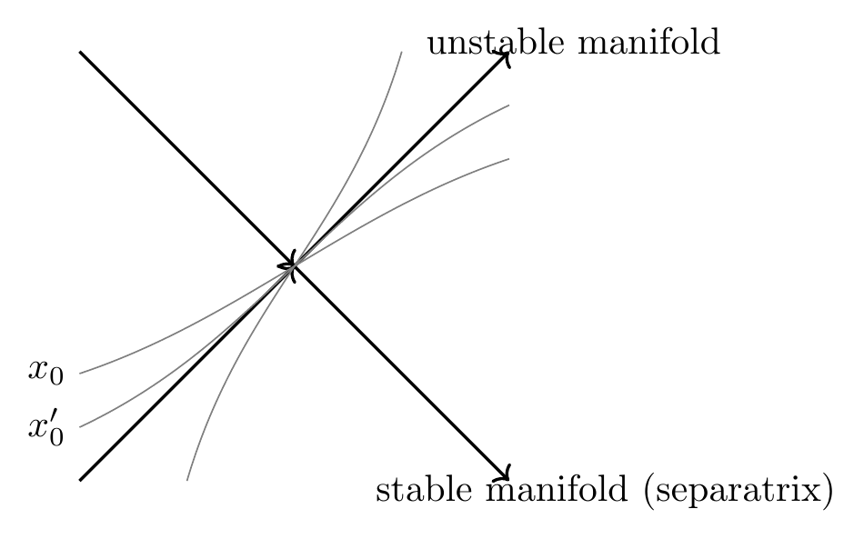
We can see that \(x_0\) decides the future of two small phase-space points that are very different, which are [nonetheless] in the neighbourhood [of each other]. So it is like [having] a separatrix at every point -- that would imply chaos.
- Bounded phase space.
- Exponential sensitivity to initial conditions.
- A dense set of unstable periodic orbits.
If we have two different initial conditions \(x_0, y_0\) with different phase trajectories, find the separation between \(x(t), y(t)\).
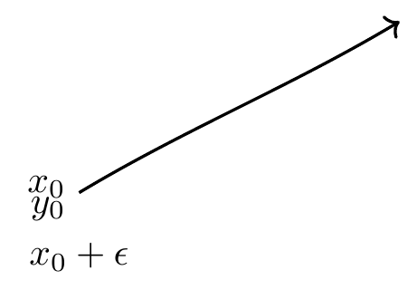
\[ \lim_{t\to\infty} \frac{1}{t} \ln \frac{|x(t)-y(t)|}{|x(0)-y(0)|} = 0 \]
as \(t\to\infty\),
To avoid such situations let us take \(\epsilon \to 0\):
but let's invert the limits,
"Liapunov exponent"
For \(n\)-dimensional phase space we need \(n\) Liapunov exponents, so there is a full spectrum of Liapunov exponents.
Equation (1) provides the maximum Liapunov exponent, as if a circle shrinks to a line.
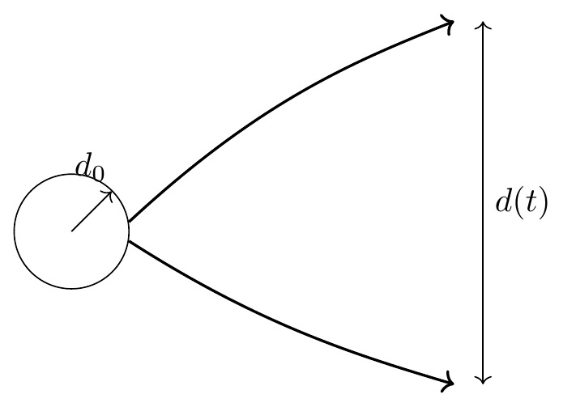
(\(d_0\) has exponential increment [along the unstable direction] while \(d_0\) [along the other directions] has decreased with time.)
In continuous time dynamics, \(N=3\) is the minimum required for chaos.
For discrete time dynamics, \(N=1\) will do.
Instead of differential equations we call them difference equations; difference equations are called maps.
\((\Delta x_n = x_{n+1}-x_n = a)\)
(i) \((a<1)\): \(x_{n+1} = a x_n\), suppose \(a<1\).
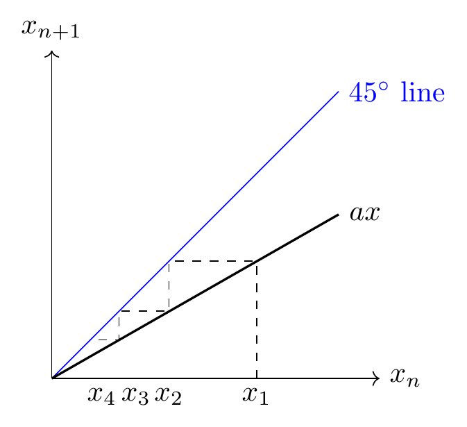
So, \(x=0\) is a stable fixed point, as we tend to \(x=0\) from both sides.
(ii) \((a>1)\)
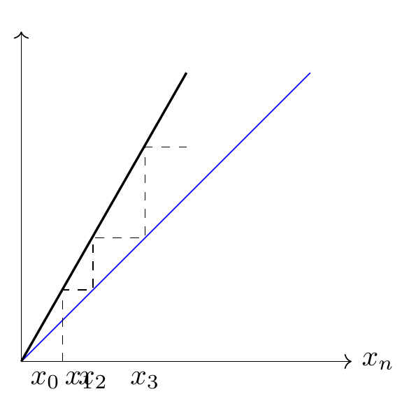
So, \(x=0\) in this case is an unstable fixed point.
(iii) \(a=1\): map is \(x=x\) (identity map) (trivial, degenerate case). Wherever the particle is, it does not move at all.
(iv) For any arbitrary map:
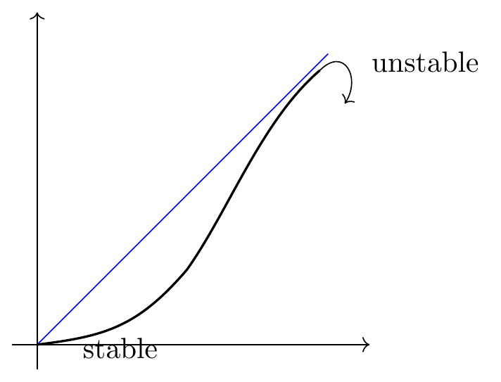
We can also see that the slope at a stable point is \(<1\) and the slope at an unstable fixed point is \(>1\).
So, if \(x^*\) is a fixed point then,
For \(f'(x^*)=-1\): cyclic (loop).
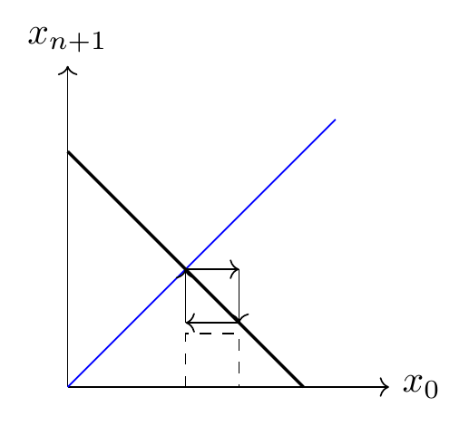
\(x^*=\) marginal fixed point (indifferent fixed point).
(v) Tangent case:-
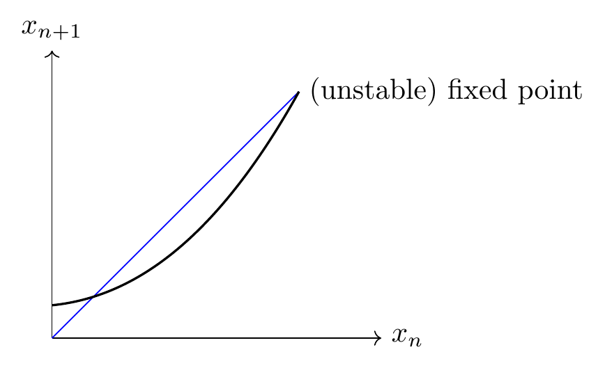
(vi) (fixed point is missed): (Intermittency)
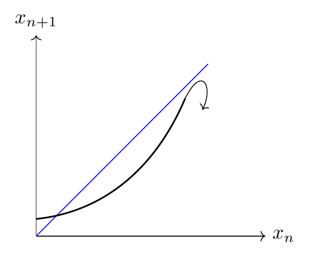
(Irregularity followed by long bursts of regularity.)
Exponential divergence of phase trajectory can be characterised by the "Liapunov exponent".
Note:- We can find a finite-time "Liapunov exponent" but it is not relevant for the purpose we have in mind.
So the reason why we need a very long time Liapunov exponent is the following. If we start with variable \(x_0\),
\(x_n\) is not computable, as the error is exponentially increasing \((x_0, x_n)\).
Ex.: if we write the number in binary, and let's say the error doubles each step, then the error from the \(100^{\text{th}}\) decimal place comes to the first decimal place after \(100\) steps.
If \(x\) represents any physical quantity, there may be some function of \(x\), \(\phi(x)\), whose average can be written as \(\langle \phi(x) \rangle\).
\(\langle \phi(x) \rangle = \) time average.
| \(\phi(x_0)\) | \(\phi(x_1)\) | \(\phi(x_2)\) | \(\phi(x_n)\) |
| \(t_0\) | \(t_1\) | \(t_2\) | \(\cdots\, t_n\) |
Since \(x_j\) is not computable, then \(\langle \phi(x) \rangle\) is meaningless. But we would like to know what the long time average is.
(replacing time average by ensemble average)
If the system is ergodic, (1) \(=\) (2): time average \(=\) ensemble average.
Note:- \(\rho(x)\) should not vary with evolution, and to attain this the dynamics has to run for a very, very long time; that's why we need long time averages. Also, for this reason we need the Liapunov exponent for a very long time.
Simplest is \(\to\) Bernoulli map (shift).
*Def\(^n\):-* (Bernoulli map is the map of the unit interval to itself.)
\(x_0\) lies in \([0,1]\); if \(x_1\) is \(f(x_0)\), \(x_1\) lies in \([0,1]\).
Ex:-
In a map \(f(x)\), the fixed point \(x^*\) satisfies
Fixed points are given by the intersection of \(x_{n+1}\) with the \(45^\circ\) line, which are \(\{0,1\}\).
So, \(x^*=0,1\) are unstable fixed points.
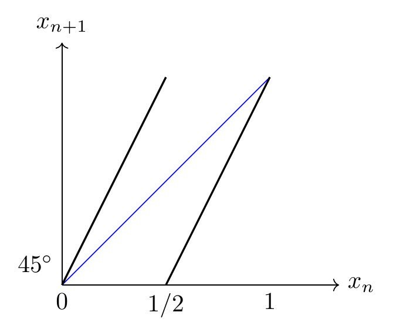
This can also happen: \(f(a)=b\), \(f(b)=a\).
First iterate of the above map:
now we have four stable... [fixed] points \(\{0, 1/4, 1/2, 3/4, 1\}\); slope at each point is \(4\), which is greater than \(1\), so fixed points are unstable.
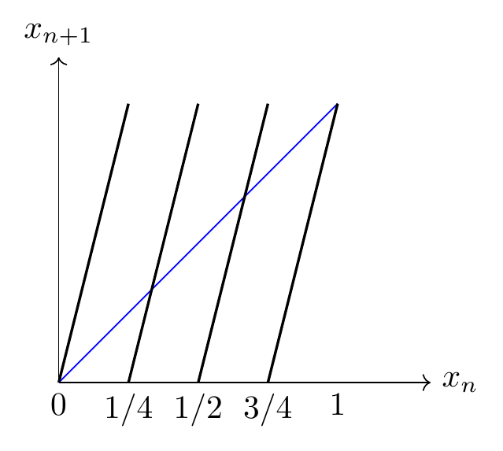
Hence it seems like the slope is increasing for iterated maps, and there are no stable fixed points.
For \(x_0 = 1/3\), \(f(x_0)=2/3\), \(f^2(x_0) = 4/3 \bmod 1 = 1/3\): period 2 cycle.
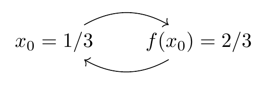
For \(x_0=1/5\): \(x_1=2/5\), \(x_2=4/5\), \(x_3=8/5 \bmod 1 = 3/5\), \(x_4=6/5 \bmod 1 = 1/5\): period 5 cycle.
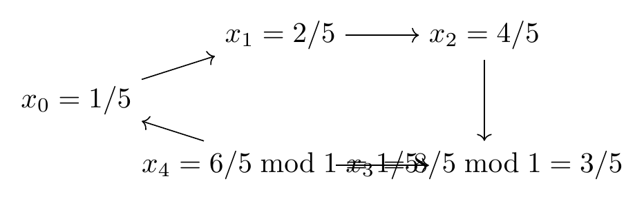
Any rational number is going to be part of a periodic orbit. So it is clear we have an infinite number of unstable periodic orbits as well.
Note:- Let us write \(x_0, x_1, \ldots, x_n\) in binary to see why it is called the Bernoulli shift. \(x_0 \in [0,1]\).
for \(x_{n+1} = 2 x_n \bmod 1\):
if \(a_0=0\), no problem \(\implies x_0 < 1/2\)
\(a_0=1 \implies x_0 \in [1/2,1] \implies (1.\,a_1a_2a_3\cdots)\bmod 1 = 0.\,a_1a_2a_3\cdots\)
So, \(x_1 = 0.\,a_1\,a_2\,a_3\cdots\)
\(\implies\) we are losing information in the forward direction, so we can't invert the map, as the map function is non-linear. (Linear maps are invertible.)
So it's the non-linearity which leads to chaos.
"Any rational number is part of a periodic orbit."
Ex:
(repetitive in pattern, or terminating.)
Because every point is unstable, every rational number is unstable; it should act like a separatrix which throws out numbers on each side.
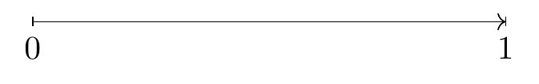
On the line from \(0\) to \(1\) there are so many more irrational numbers than rational numbers.
And if \(x_0=\) irrational number, it wanders everywhere and fills this interval \([0,1]\) densely.
- \(\to\) The system is ergodic.
- \(\to\) The system is dissipative (How?) \(\to\) will prove later.
we get,
we get,
from using
we can note that \(\lambda(x_0)\) is a function which depends on each point of the orbit, \(x_0, x_1, x_2, \ldots, x_{n-1}\).
for
so,
also, for \(f(x)=ax\), \(0<a<1\):
\(f'(x)<1 \implies\) stable fixed points. \((0<a<1)\)
Also, for the Liapunov exponent \(\lambda(x_0)=\ln a < 0\), so for a stable fixed point the Liapunov exponent becomes negative (everything falls to one place).
Q.) What would be the Liapunov exponent for a period 2 cycle?
for stability, \(|f'(a)f'(b)|<1\) (slope \(<1\))
Note:- The map is random, in the following sense: we agree that the rule is completely deterministic, for each \(x_0\) we have a well-defined \(x_1\) (with no randomness), and yet this is as random as a coin toss. Suppose below is our phase space. In reality we need bins/cells to keep track of phase space points; a `cell', so we do a partition of phase space into cells/bins and numerically calculate how many times a particular point lies in a particular cell/bin.
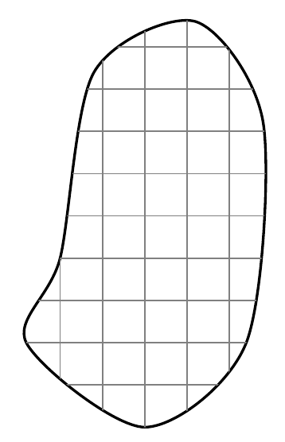
For \(x_{n+1} = 2x_n \bmod 1\):
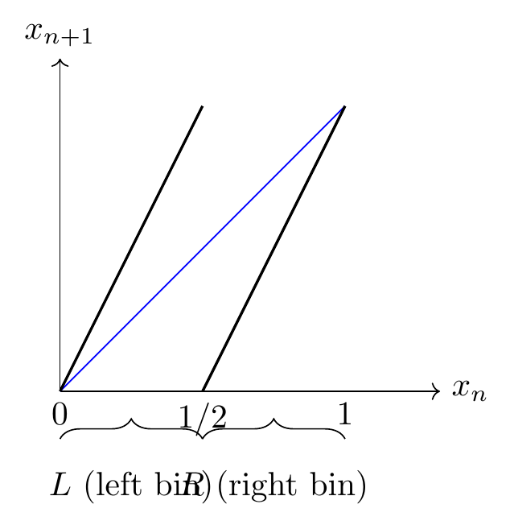
We just want to know [whether] a particular point lies in the left bin or the right bin.
Any irrational number from \(0\) to \(1\) can be written as non-terminating in binary:
Above, \(x_i\) is equivalent to asking whether \(a_i\) is \(0\)' or \(1\)'.
for \(x_0 < 1/2\): \(a_0=0 \leftrightarrow L\)
\(1 > x_i > 1/2\): \(a_0=1 \leftrightarrow R\)
So any arbitrary string of irrational numbers can be written as
which can then also be said to be obtained from a coin toss experiment.
So, in this sense the Bernoulli map are as random as coin toss.
So we can't tell the difference if somebody is producing a
pattern of [?] (L, R, ...) by deterministic rule from the same
pattern produced from Bernoulli trial of coin toss.
For every substring we obtain from the coin toss experiment,
there exists an initial condition \(x_0\) which will produce the same
string from the deterministic rule of the Bernoulli shift. In that
sense randomness and determinism are very closely linked with
each other.
Let's find \(\rho(x)\):
Suppose we start with \(x_0\)
What is the probability density of \(x_1\) after one iteration?
Of course it is sharp at \(x_1\) \(\to\) Dirac delta function.
any given point \(y \xrightarrow[\text{iteration}]{T} f(y)\)
after \(n\) time steps, what is the probability density in \(x\)?
\(\rho_n(x)\) = density of the \(n^{\text{th}}\) iterate; does not depend on the initial
condition.
\(\to\) singular integral equation with kernel \(K(x,y) = \delta(x - f(y))\)
\(K(x,y)\) = kernel of the integral operator,
where the integral operator is \(\int dy\, K(x,y)\) acting on \(\phi(y)\).
\(\to\) Eigenvalue \(= 1\)
Normalization condition on \(\rho(x)\):
Take \(f(y) = 2y \bmod 1\):
Therefore iterates of an irrational number uniformly and densely
fill up the complete interval.